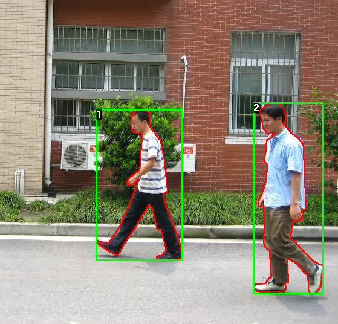
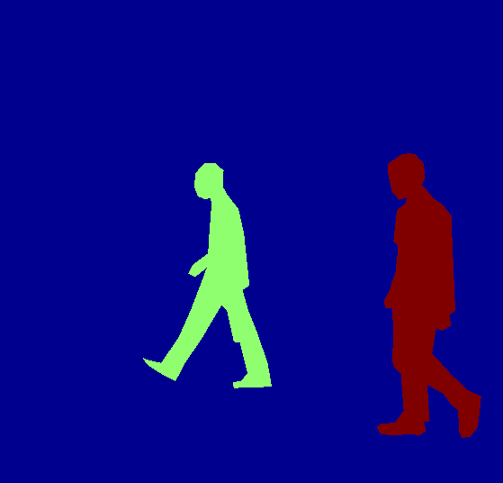
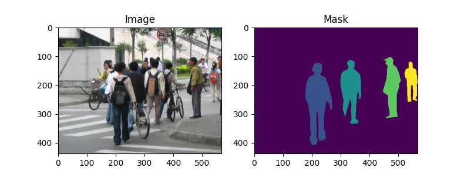
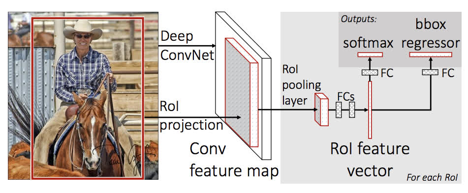
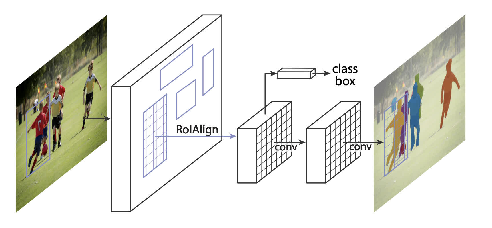

9.1 Object Detection
TorchVision Object Detection Finetuning Tutorial
Created Date: 2025-06-20
For this tutorial, we will be finetuning a pre-trained Mask R-CNN model on the Penn-Fudan Database for Pedestrian Detection and Segmentation . It contains 170 images with 345 instances of pedestrians, and we will use it to illustrate how to use the new features in torchvision in order to train an object detection and instance segmentation model on a custom dataset.
The original You Only Look Once talk is the picture for this page.


Figure 1 - Sample Image and Labeded Mask
9.1.1 Defining the Dataset
The reference scripts for training object detection, instance segmentation and person keypoint detection allows for easily supporting adding new custom datasets. The dataset should inherit from the standard torch.utils.data.Dataset class, and implement __len__ and __getitem__ .
The only specificity that we require is that the dataset __getitem__ should return a tuple:
image: torchvision.tv_tensors.Image of shape
[3, H, W], a pure tensor, or a PIL Image of size(H, W).target: a dict containing the following fields - boxes, labels, image_id, area, iscrowd and masks.
First, finetunning.py download the dataset and extract the zip file:
file_path = download.download(url,
sha1_hash='88474aa75cc41dbb8d3c76d2f3c818e79fa0438d')
print(file_path)
base_name = os.path.splitext(os.path.basename(file_path))[0]
extract_dir = os.path.join(os.path.dirname(file_path), base_name)
with zipfile.ZipFile(file_path, 'r') as zip_ref:
names = zip_ref.namelist()
top_level_dirs = {name.split('/')[0] for name in names if '/' in name}
if len(top_level_dirs) == 1 and base_name in top_level_dirs:
zip_ref.extractall(os.path.dirname(file_path))
os.rename(os.path.join(os.path.dirname(file_path), base_name), extract_dir)
else:
os.makedirs(extract_dir, exist_ok=True)
zip_ref.extractall(extract_dir)We have the following folder structure:
PennFudanPed/
PedMasks/
FudanPed00001_mask.png
FudanPed00002_mask.png
FudanPed00003_mask.png
FudanPed00004_mask.png
...
PNGImages/
FudanPed00001.png
FudanPed00002.png
FudanPed00003.png
FudanPed00004.png
Here is one example of a pair of images and segmentation masks:
image = torchvision.io.read_image(os.path.join(extract_dir, 'PNGImages/FudanPed00046.png'))
mask = torchvision.io.read_image(os.path.join(extract_dir, 'PedMasks/FudanPed00046_mask.png'))
pyplot.figure(figsize=(8, 4))
pyplot.subplot(121)
pyplot.title('Image')
pyplot.imshow(image.permute(1, 2, 0))
pyplot.subplot(122)
pyplot.title('Mask')
pyplot.imshow(mask.permute(1, 2, 0))
pyplot.show()
Figure 2 - FudanPed Random Sample
So each image has a corresponding segmentation mask, where each color correspond to a different instance. File penn_fundan_dataset.py write a torch.utils.data.Dataset class for this dataset. In the code below, we are wrapping images, bounding boxes and masks into torchvision.tv_tensors.TVTensor classes so that we will be able to apply torchvision built-in transformations (new Transforms API) for the given object detection and segmentation task.
Namely, image tensors will be wrapped by torchvision.tv_tensors.Image, bounding boxes into torchvision.tv_tensors.BoundingBoxes and masks into torchvision.tv_tensors.Mask. As torchvision.tv_tensors.TVTensor are torch.Tensor subclasses, wrapped objects are also tensors and inherit the plain torch.Tensor API. For more information about torchvision tv_tensors see this documentation .
import os
import torch
from torchvision.io import read_image
from torchvision.ops.boxes import masks_to_boxes
from torchvision import tv_tensors
from torchvision.transforms.v2 import functional as F
class PennFudanDataset(torch.utils.data.Dataset):
def __init__(self, root, transforms):
self.root = root
self.transforms = transforms
# load all image files, sorting them to
# ensure that they are aligned
self.imgs = list(sorted(os.listdir(os.path.join(root, "PNGImages"))))
self.masks = list(sorted(os.listdir(os.path.join(root, "PedMasks"))))
def __getitem__(self, idx):
# load images and masks
img_path = os.path.join(self.root, "PNGImages", self.imgs[idx])
mask_path = os.path.join(self.root, "PedMasks", self.masks[idx])
img = read_image(img_path)
mask = read_image(mask_path)
# instances are encoded as different colors
obj_ids = torch.unique(mask)
# first id is the background, so remove it
obj_ids = obj_ids[1:]
num_objs = len(obj_ids)
# split the color-encoded mask into a set
# of binary masks
masks = (mask == obj_ids[:, None, None]).to(dtype=torch.uint8)
# get bounding box coordinates for each mask
boxes = masks_to_boxes(masks)
# there is only one class
labels = torch.ones((num_objs,), dtype=torch.int64)
image_id = idx
area = (boxes[:, 3] - boxes[:, 1]) * (boxes[:, 2] - boxes[:, 0])
# suppose all instances are not crowd
iscrowd = torch.zeros((num_objs,), dtype=torch.int64)
# Wrap sample and targets into torchvision tv_tensors:
img = tv_tensors.Image(img)
target = {}
target["boxes"] = tv_tensors.BoundingBoxes(boxes, format="XYXY", canvas_size=F.get_size(img))
target["masks"] = tv_tensors.Mask(masks)
target["labels"] = labels
target["image_id"] = image_id
target["area"] = area
target["iscrowd"] = iscrowd
if self.transforms is not None:
img, target = self.transforms(img, target)
return img, target
def __len__(self):
return len(self.imgs)That’s all for the dataset. Now let’s define a model that can perform predictions on this dataset.
9.1.2 Defining your model
In this tutorial, we will be using Mask R-CNN, which is based on top of Faster R-CNN. Faster R-CNN is a model that predicts both bounding boxes and class scores for potential objects in the image.

Figure 3 - Faster R-CNN Architecture
Mask R-CNN adds an extra branch into Faster R-CNN , which also predicts segmentation masks for each instance.

Figure 4 - Mask R-CNN Architecture
There are two common situations where one might want to modify one of the available models in TorchVision Model Zoo. The first is when we want to start from a pre-trained model, and just finetune the last layer. The other is when we want to replace the backbone of the model with a different one (for faster predictions, for example).
Let’s go see how we would do one or another in the following sections.
9.1.2.1 Finetuning from a Pretrained Model
Let’s suppose that you want to start from a model pre-trained on COCO and want to finetune it for your particular classes. Here is a possible way of doing it:
# load a model pre-trained on COCO
model = torchvision.models.detection.fasterrcnn_resnet50_fpn(weights="DEFAULT")
# replace the classifier with a new one, that has
# num_classes which is user-defined
num_classes = 2 # 1 class (person) + background
# get number of input features for the classifier
in_features = model.roi_heads.box_predictor.cls_score.in_features
# replace the pre-trained head with a new one
model.roi_heads.box_predictor = torchvision.models.detection.faster_rcnn.FastRCNNPredictor(in_features, num_classes)9.1.2.2 Modifying the Model to Add a Different Backbone
Finetuning replaces the box predictor and leaves the trunk in place. Swapping the backbone replaces the network that builds the feature map, which is the change to make when the ResNet-50 FPN trunk is heavier than the runtime budget. finetunning.py takes mobilenet_v2(weights="DEFAULT").features and sets backbone.out_channels = 1280, the channel count Faster R-CNN uses to size the region proposal network.
The proposal stage still needs anchors and a pooled feature size. The script builds an AnchorGenerator with sizes (32, 64, 128, 256, 512) and aspect ratios (0.5, 1.0, 2.0), and a MultiScaleRoIAlign on the feature map named '0' with a 7×7 crop. Those pieces go into FasterRCNN with num_classes=2. A backbone that returns one tensor uses featmap_names=['0'], a single level, where a feature pyramid would list several maps.
9.1.2.3 Model for PennFudan Dataset
Penn-Fudan pedestrians is a small instance-segmentation set. Each photo contains people, and the mask file paints each person in a different color. penn_fundan_dataset.py reads PNGImages and PedMasks, drops the background id, and turns the remaining colors into binary masks, boxes from masks_to_boxes, and a label tensor of ones. One foreground class means the detector is built with two classes, person and background.
get_model_instance_segmentation starts from maskrcnn_resnet50_fpn pretrained on COCO and replaces both heads. The box predictor becomes a FastRCNNPredictor with num_classes outputs. The mask predictor becomes a MaskRCNNPredictor with hidden width 256. The pretrained trunk stays, and the new heads are what two epochs on this set are meant to adapt.
9.1.3 Putting Everything Together
The training loop in finetunning.py connects the dataset to that model. Training images get a horizontal flip with probability 0.5, a cast to float, and ToPureTensor. collate_fn zips a batch into a tuple of images and a tuple of target dicts, because the images have different sizes and will not stack. A random permutation holds out the last 50 images for evaluation.
The optimizer is SGD at learning rate 0.005, momentum 0.9, and weight decay 0.0005, over parameters that require gradients. A StepLR scheduler uses step size 3 and gamma 0.1. Each of num_epochs = 2 calls train_one_epoch, steps the scheduler, then calls evaluate on the held-out loader. The model runs on CUDA when it is available, and on CPU otherwise.
9.1.4 Testing forward() method (Optional)
Before that loop, the same file checks that forward accepts a batch from the loader. It takes two images, keeps each target dict as it is, and calls model(images, targets) in training mode. The return value is a dict of losses. A second call switches the model to eval and passes two random tensors with different heights, 300 and 500, both width 400. predictions[0] is the dict of boxes, labels, and scores for the first image.
A later block runs the trained Mask R-CNN on FudanPed00046.png. It keeps the first three channels, moves them to device, and calls the model under torch.no_grad(). Boxes are drawn with the score in the label text, and masks are drawn where the predicted probability is above 0.7. That is the inference path of the same forward.
9.1.5 Wrapping up
In this tutorial, we have learned how to create own training pipeline for object detection models on a custom dataset. For that, we wrote a torch.utils.data.Dataset class that returns the images and the ground truth boxes and segmentation masks. we also leveraged a Mask R-CNN model pre-trained on COCO train2017 in order to perform transfer learning on this new dataset.